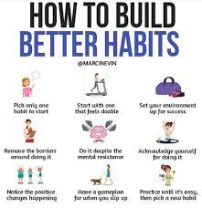

Home
Articles
Habits
Skills
Quotes
Books
Habits

1.Practice Voice Excercises
Why? Because I want to speak openly and confidently with any natural voice.
2.Body and Posture Awareness
Why? Because it helps me relax body's tension and so I can learn to listen to what my body is telling me.
3.Breath Awareness and Deep Breathing
Why?Because it brings me back in the present moment and helps to keep the emotions in balance.
4.Develop Concentration
Why? Because we live in a world of distraction and concentration is one of the most valuable skills to develop to succeed in life.
5.Cultivate a State of Abundance
Why? Because scarcity mindset is the source of all suffering and I want to live a happy life.
6.Drinking 8 glases of water per day
Why? Because keeping hydrated is crucial for health and well-being.
7.Emotional State Awareness
Why? Because emotions are the driving force behind all of my acions and becoming aware of emotions is the first step for mastering them.